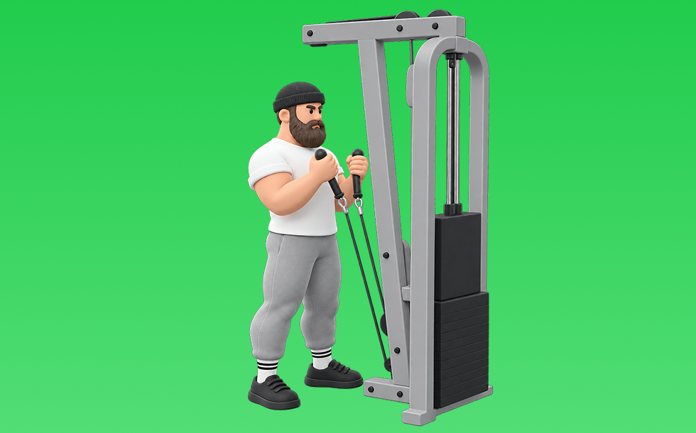

ケーブルハンマーカール

ケーブルハンマーカールとは、ケーブルを使ってニュートラルグリップで「肘を曲げる」動作で腕（上腕二頭筋、上腕筋）と前腕を鍛える種目です。可動域全体で張力が抜けにくいのが特徴で、肘を体側に固定し、引き上げてゆっくり戻す動作を繰り返します。腕の厚みづくりや握る力の補強が期待できます。
- 対象部位
- 腕
- 器具
- ケーブル
- 記録形式
- 重量・回数
- 別名
- ロープハンマーカール / cable rope hammer curl / rope hammer curl
YouTube動画
-
【腕の筋トレ】「ケーブルハンマーカール」上腕二頭筋の深層上腕筋を鍛えるトレーニング
-
ケーブルハンマーカール
-
暇つぶしに近い【ケーブル・ハンマーカール】
-
腕が太くなる！上腕筋を狙うケーブルハンマーカールの正しいフォームとは？
-
ケーブルハンマーカール
-
【初心者】ケーブルカールの効果的なやり方 | ケーブルカールのバリエーション【ビーレジェンド プロテイン】
-
ケーブルハンマーカール
-
【ケーブルカール】上腕二頭筋に効かせるコツ〜ロープ・チューブなどアタッチメントの種類も！
-
【ハンマーカール】上腕二頭筋の長頭に効かせるには片方ずつが効果的！重量、回数なども解説
-
【腕の筋トレ】「ハンマーカール」上腕二頭筋の深層、上腕筋のトレーニング
YouTubeショート
-
ケーブルハンマーカール（Cable Hammer Curl）のやり方とフォーム
-
腕をデカくする必須種目【ケーブルハンマーカール】#筋トレ #腕トレ#パーソナルトレーナー
-
【筋トレガチ】ケーブルハンマーカール
-
【ケーブルハンマーカール】#ケーブルハンマーカール #腕トレ #東京ジム #AnywhereFitness
-
みなさんはケーブルハンマーカールやってますか？持田選手とこんがりさんが前腕に効くトレーニングをレクチャーしてくれました！#筋トレ #volix #前腕トレ #ちょこっと惜しい #上腕二頭筋
-
ケーブルハンマーカール
-
ケーブルハンマーカール
-
【ケーブル ハンマーカール】
-
腕を鍛えろ！ケーブルハンマーカール
-
持田選手にケーブルとダンベルを使用したハンマーカールについてレクチャーしていてもらいました！次はどの種目の解説をやってほしいかコメントしてね！#筋トレ #volix #トレーニング #ちょこっと惜しい
-
ハンマーカールの正しいやり方 | ボディビル日本チャンピオンが解説 #shorts【ビーレジェンド プロテイン】
-
#shorts 【ケーブルハンマーカール】アラフィフ！
-
前腕トレ ケーブルハンマーカール
-
【腕トレ】上腕二頭筋を鍛えるケーブルカールのやり方解説
-
ケーブルハンマーカール 70kg
-
【筋トレ】ケーブルハンマーカール【上腕二頭筋長頭】#shorts
-
ただケーブルハンマーカールをやるだけの動画 #shorts #筋トレ #筋肉 #腕トレ
-
【ケーブルハンマーカール】#shorts
-
ケーブルハンマーカール ロープ 20kg
-
ケーブルハンマーカール 30kg
-
［腕トレオススメデザート🍰］前腕にバチバチに効くケーブルハンマーカール🏋️♂️#shorts #youtubeshorts #2023 #筋肉 #筋トレ #フィットネス #腕トレ #おすすめ
-
ケーブルアームカール#筋トレ #ボディメイク #パーソナルトレーニング #ストレッチ #ダイエット #トレーニング #腕トレ#ケーブル#アームカール
-
【シャイニー選手】ケーブルカールのポイント
-
効果がないハンマーカール #筋トレ
-
ハンマーカール（Hammer Curl）のやり方とフォーム
-
ジャスティス岩倉のリズミカルを意識したケーブルカールロープバージョンジャスティス！
-
ケーブルカール（Cable Curl）のやり方とフォーム
-
ケーブルハンマーカールの回
-
ハンマーカール、握り方を変えるだけで怪我を防げるって知ってた？
-
ケーブルハンマーカール｜マルチファンクショナルラック｜EVOLGEAR
-
ハンマーカールのやり方-前腕と二頭筋を鍛えて太い腕を作る筋トレ
-
早く知りたかった腕トレ③ハンマーカール #shorts #筋トレ
-
【ケーブルアームカール】#shorts
動作方法
- 肘の位置を固定して構える
- 肘を軸にして持ち上げる
- ゆっくり下ろして負荷を保つ
動作ポイント
- 肘を前後に振りすぎない
- 手首を反らしすぎない
ワンポイントアドバイス
- 肘の位置を固定すると狙った部位に効きやすい
- 回数を急がず、下ろし動作を丁寧に行う
目的別回数設定
目的や体力に応じた一般的な目安です。無理のない範囲で調整してください。
- 筋力アップ
- 1〜5回
- 筋肥大
- 6〜12回
- 持久力アップ
- 13〜20回
YouTube動画について
動画はYouTubeの公開情報をもとに表示しています。内容は投稿者によるもので、Biggrによる監修ではありません。
アプリを入手
筋トレやトレーニングの記録はBiggrにお任せください。今すぐ無料で使い始められます。